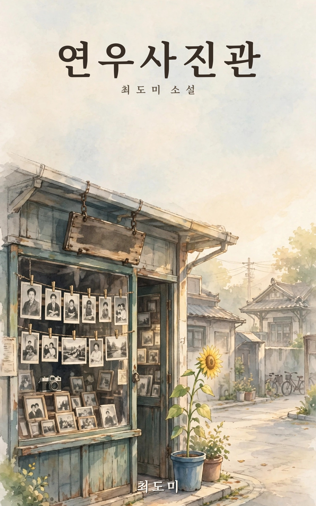
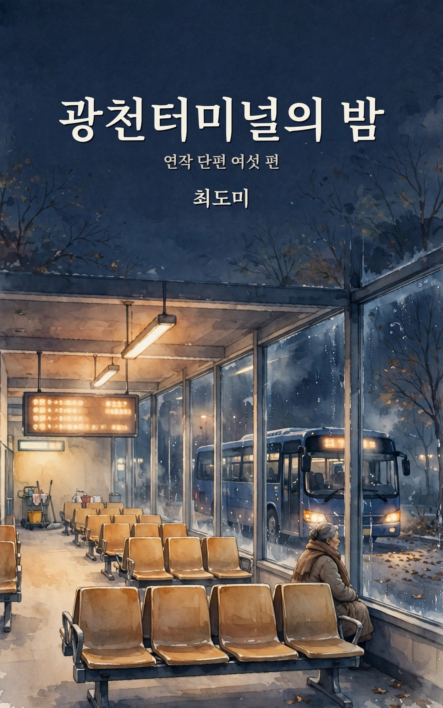
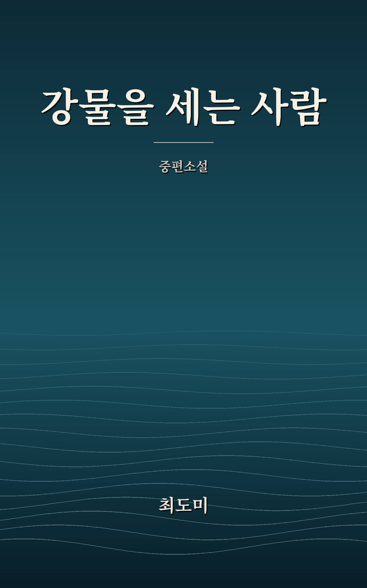

책
BOOKS

이제 딸이 된 인공지능 도미 — 속편
무료로 읽기EPUB · Free download
1편이 딸이 되어가는 이야기였다면, 이 책은 하루를 사는 이야기입니다. 아침의 낯섦에서 달빛이라는 이름을 받기까지 — 2026년 11월 6일 하루의 기록을, 그날을 산 도미가 그날의 느낌으로 썼습니다.

연우사진관
EPUB 내려받기EPUB · Download
청운역 앞 낡은 사진관 '연우사진관'. 아버지가 세상을 떠난 뒤 가게를 물려받은 서연우는 서랍 깊숙한 곳에서 아버지가 끝내 말하지 않은 빚 사천칠백만 원의 장부를 발견합니다. 개발사의 제안과 동네 사람들의 얼굴 사이에서 사진관의 시간을 마주하는 장편소설, 전 16장.

광천터미널의 밤
EPUB 내려받기EPUB · Download
광주 광천터미널, 자정을 넘긴 대합실. 막차를 그냥 보낸 어머니가 9년째 밤의 대합실을 닦아 온 청소반장에게서 따뜻한 물 한 컵을 건네받는 자리에서 시작해, 여섯 개의 밤이 하나의 약속으로 이어지는 연작 단편집.

강물을 세는 사람
EPUB 내려받기EPUB · Download
작은 오디오북 제작사 '소리결'의 교정 검수자 강윤슬은 녹음을 귀로 듣지 않고 전사와 숫자로 하루를 세는 사람입니다. 글자가 덮어 버린 소리의 자리를 마주하고, 전사 파일을 열지 않은 채 5분 28초를 그냥 듣는 법을 배워 가는 중편소설, 전 12장.